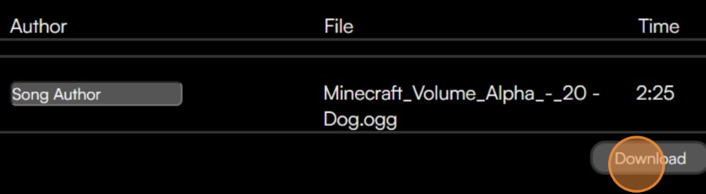

Step 1

Think of a pack name and set it
Step 2
Put a description for your pack to help the people using
You may leave the default
Step 3
You can set an icon for you pack here
Step 4
Use the +Add Button to add a disc
Step 5
Clicker on the "Upload Image Square" to put a custom texture for you disc here
Step 6
Put the name of your song here
Do the same for the your song's author
Step 7
Verify your song file is a .ogg format and is mono. Otherwise the disc may not work.
Click on the "No File ⤓" to set upload the song
Step 8
If you added a disc, you may need to delete it by clicking on the "⨉"
Step 9
Download The Pack
Step 10
The downloaded pack is a resource pack and a datapack at the same time
Enable it as a resource pack
Step 11
The downloaded pack is a resource pack and a datapack at the same time
Put the pack in your world > datapacks folder
Enable it as a datapack
Step 12
Play on your world
Type /function new_music:[name_of_your_song]
You may use auto-complete with tab and arrow keys